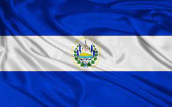

Información de la Investigación
Escudo Nacional
El escudo nacional de El Salvador, adoptado en 1912, simboliza la independencia y la unidad del país. Su diseño incluye varios elementos significativos, como el volcán de Izalco y las banderas de los países centroamericanos.
Bandera
La bandera de El Salvador, con sus colores azul y blanco, refleja el orgullo nacional. Los tres franjas horizontales representan la paz y la unidad, mientras que el escudo en el centro simboliza la independencia y la fortaleza.
Himno Nacional
El himno nacional de El Salvador, titulado "Cerca de ti, Salvador", es un himno lleno de orgullo y sentimientos patrióticos, compuesto por Juan José Cañas en 1879.
Tabla de Símbolos
| Símbolo | Descripción | Fecha de Adopción |
|---|---|---|
| Escudo Nacional | Símbolo de identidad nacional | 1912 |
| Bandera | Símbolo de unidad y paz | 1865 |
| Himno Nacional | Expresión de patriotismo | 1879 |